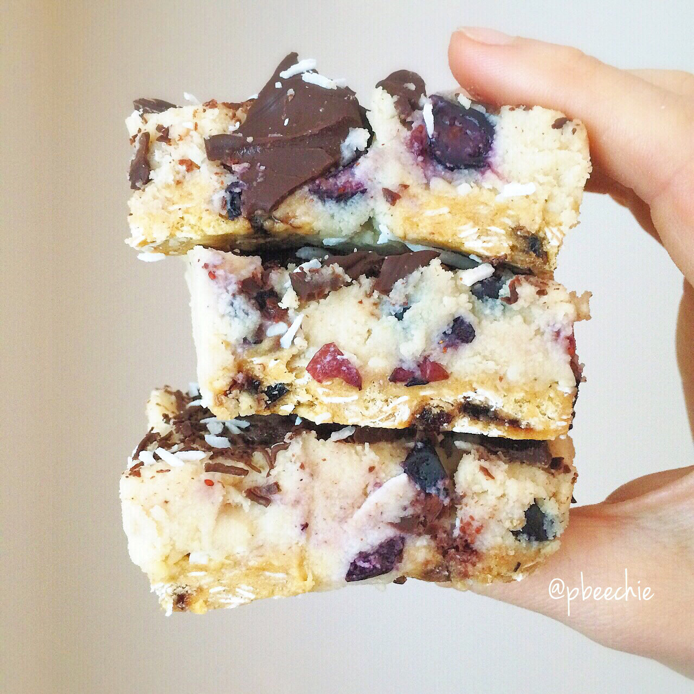

Blueberry Coconut Protein Bars

I's can walk I's can walk!! It's been 7.5 weeks and my broken foot is nearly healed!!! Soo excited that I can put pressure on my foot. Baking (& life in general) is easy again yaaaayayayayy. Kitchen fun times ensued. I made these blueberry coconut protein bars. They're reeeeally good. And yeah. Yay. Yay. Yee. Woo. Although...I somehow dropped a tube of sprinkles in the process. On hardwood floor... Sprinkles. Everywhere. Tiny, spherical sprinkles. In my kitchen & living room. Everywhere. Worth? Yes. I took it as a sign though that maybe I shouldn't be walking as much as I am just yet, ha. I can walk on carpet a bit, but the hardwood is too harsh on my feet for now and after a while I feel tightness in the bone. So I'm taking it slow! I'm just so excited that things are getting easy again. Showering (instead of bathing) is my favorite. I go to the orthopedic Monday and should be ready to start physical therapy! :)
Blueberry Coconut Protein Bars
Makes: 12 bars
-
3 scoops vanillaprotein powder
-
1/2 cup coconut flour
-
1/4 cup almond flour (or more coconut flour)
-
1/4 cup coconut oil
-
1/4 cup baking stevia
-
1/4 cup unsweetened applesauce
-
3/4-1 cup unsweetened almond milk
-
3/4 cup blueberries
Line a 9x9 dish with your 6 unwrapped Smart Bars. This gives the bars a firm base and I LOVE the "bite" it gives. Then in a bowl, mix your remaining ingredients except for the almond milk and blueberries. Once added to the bowl, THEN add the 3/4 cup almond milk and mix it all evenly. Depending on your protein powder and other ingredients, you may need to slowly add more almond milk to be able to mix it. Add 1 TBSP at a time slowly, using as little liquid as possible to incorporate the ingredients. You don't want it runny. Once mixed to the right consistency, fold in the blueberries. Spread this on top of the bars in the 9x9 dish.
I also drizzled a little melted sugar free chocolates and unsweetened coconut. Optional, but I likey. Then it's ready! No baking required!
Cut into 12 bars and eat immediately, or freeze for 1 hour first before cutting them into 12 pieces! Both ways are awesome.
For 1 bar (out of 12): 171 cals; 6 g fat, 17 g carbs (6 g fiber), and 13 g protein